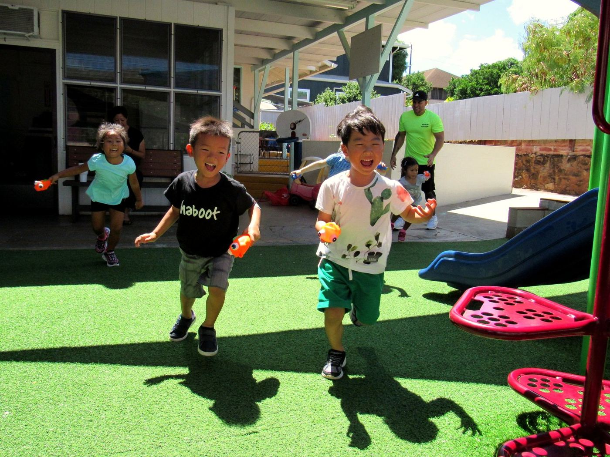
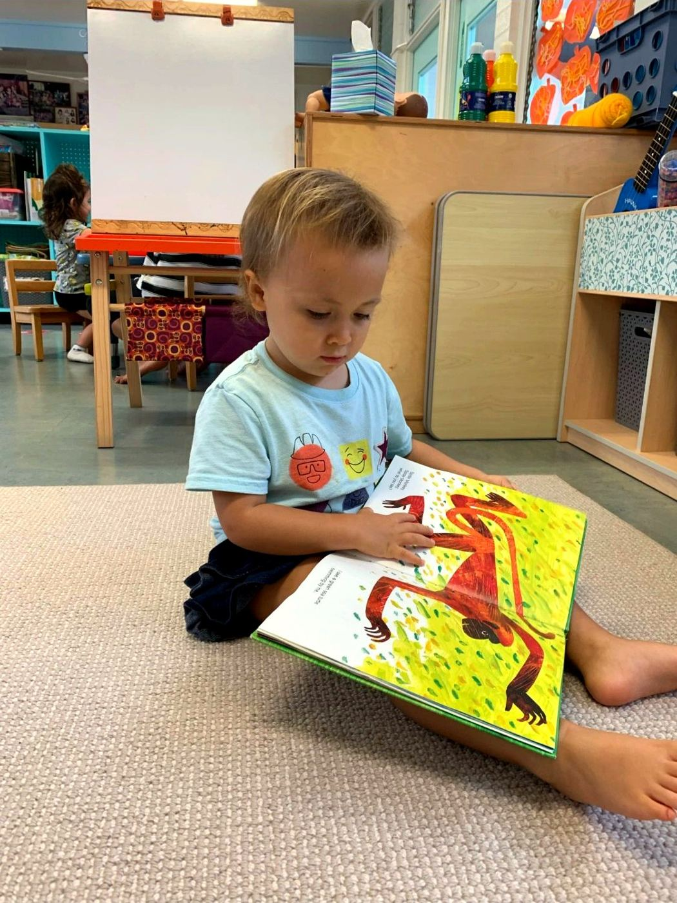
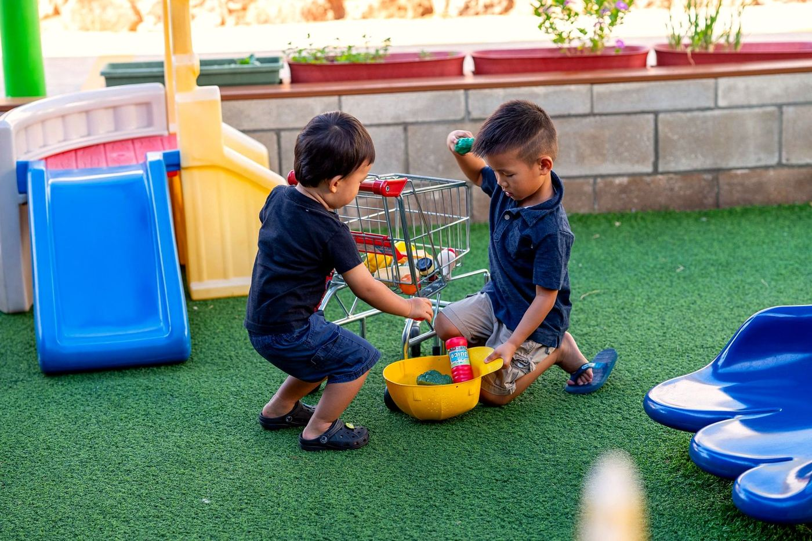
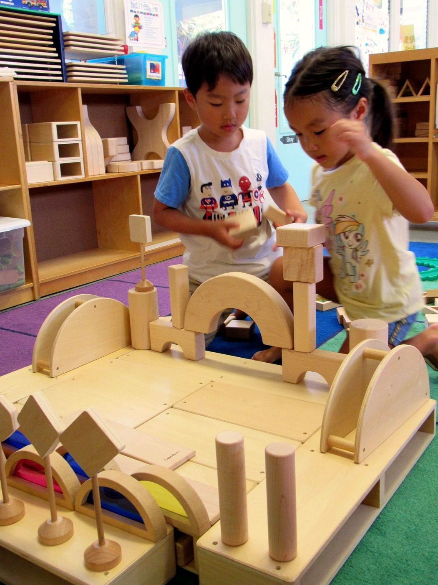
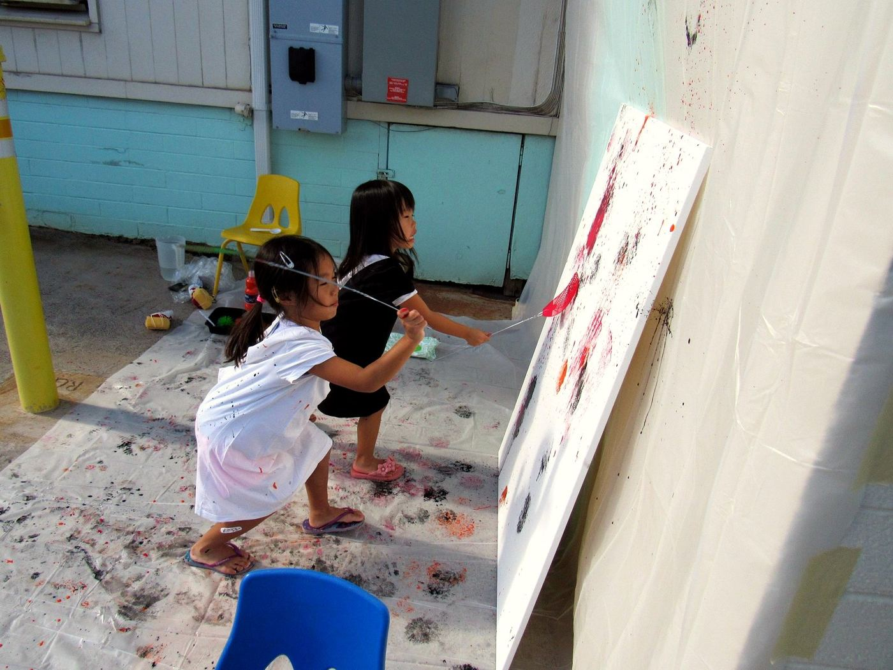
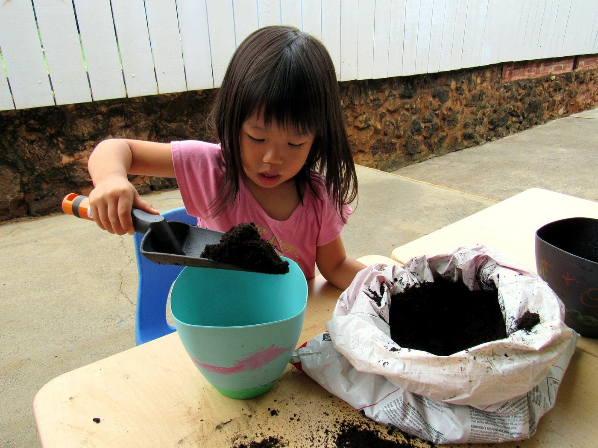
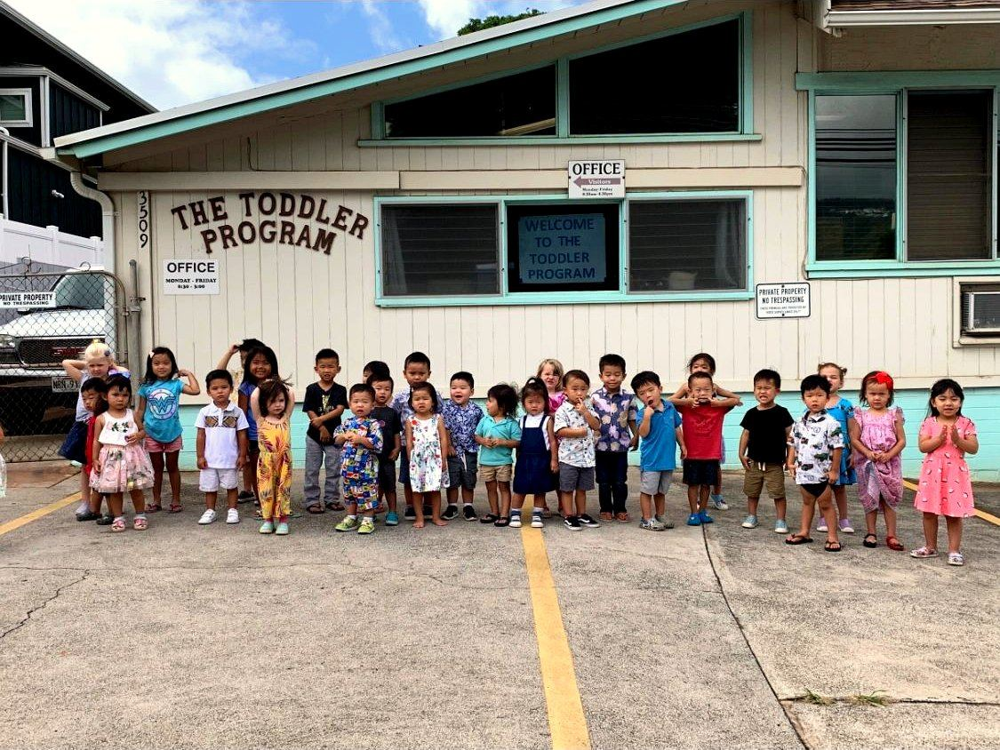
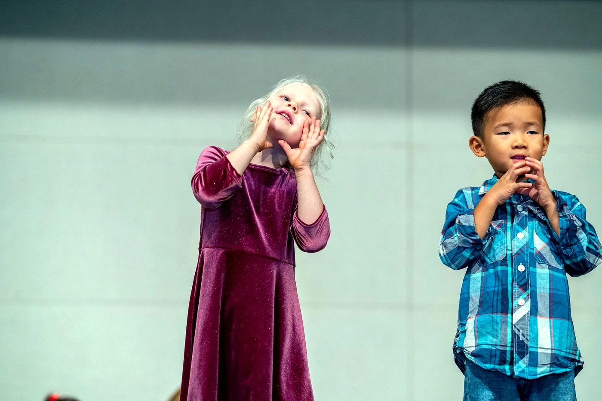

A Kaimukī preschool where little ones are known
A small, non-profit preschool for ages 2–5, with a story-rich program, gentle teachers, and room for every keiki to bloom.
Or call (808) 735-3197 · Mon–Fri 8:15–3:00
How old is your little one?
Sunshine Bears
Lead teacher, aide, plus a floating aide
First school days, held with extra warmth. Two-year-olds are welcome even if they aren't potty trained yet — toilet learning happens gently, on your child's timeline.

center of the day
Truly known, not one of many
In small, named classes, teachers learn who your child is: what makes them laugh, what they're working on, what they need on a hard morning.
- Literature-based learning: a favorite book becomes the week's adventure
- Music, Mandarin & movement enrichment on Mondays
- Walking excursions into the Kaimukī neighborhood
- Christian values, all faiths warmly welcome
Meet the Bears
From first school days to kindergarten readiness, each small class is a home base with its own teachers and character.
Sunshine Bears
First school days, held with extra warmth. Two-year-olds are welcome even if they aren't potty trained yet — toilet learning happens gently, on your child's timeline.
Explore →Age 3Aloha Bears
Friendships grow and language blooms. Big curiosity, growing confidence, and plenty of stories.
Explore →Age 4Friendship Bears
Big questions and busy hands. Social, thinking, and creative skills take off together.
Explore →Age 5Honey Bears · Jr. K
A dedicated bridge year that builds early literacy, numeracy, and independence, so children head to kindergarten confident and ready.
Explore →Gentle rhythm, full of wonder
Aloha & circle
Songs, the calendar, and the day's story together.
Story-led discovery
A favorite book becomes art, blocks, early math, and play.
Outside
Fresh air on the playground, or a walk through Kaimukī.
Lunch
A calm, social meal as a class.
Rest
Quiet time on cozy mats to recharge.
Pickup
Home with a story to tell.
Drop-off from 7:00 am · optional after-school care until 5:15 pm
Life at The Toddler Program
Moments from our classrooms and playground on Pāhoa Avenue.






Good to know
Does my 2-year-old need to be potty trained?
No. Sunshine Bears (2s) welcomes children who aren't potty trained yet. Teachers partner with families on toilet learning gently, on your child's own timeline.
What ages do you serve?
Ages 2 through 5, in four classes: Sunshine Bears (2s), Aloha Bears (3s), Friendship Bears (4s), and Honey Bears Junior Kindergarten (5s).
What are your hours?
The school day runs 8:15 am to 3:00 pm, Monday through Friday. Drop-off is available from 7:00 am, and optional after-school care runs until 5:15 pm for an additional fee.
How big are the classes?
Classes are small. Aloha Bears (3s) has 10–12 children with a lead teacher and an aide. Sunshine Bears (2s) has a lead teacher, an aide, and a floating aide.
What is a literature-based curriculum?
Great children's books sit at the center of learning. A story becomes the theme for art, dramatic play, early math, science, and conversation.
What enrichment is offered?
Mondays add Music, Mandarin, and movement enrichment.
Book a 30-minute tour
See the classrooms in action, meet a teacher, and ask everything. It's the best way to know if we're the right fit.
- 📍 3509 Pāhoa Ave, Honolulu, HI 96816 · Directions
- 📞 Prefer to talk? (808) 735-3197
- 🕗 Mon–Fri · 8:15 am–3:00 pm (drop-off from 7:00 am)
Let's find your child's place
Now enrolling for 2026–27. Come for a relaxed tour, then apply when you're ready.